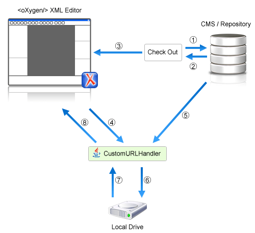

How to Write a CMS Integration Plugin
To have a complete integration between Oxygen XML Author and a CMS, you usually have to
write a plugin that combines the
following two available plugin extensions:The usual set of requirements for an integration between Oxygen XML Author and the
CMS are as follows:
- Contribute to the Oxygen XML Author toolbars and main menu with your custom Check
Out and Check In actions:
- Check Out triggers your custom dialog boxes that allow you to browse the remote CMS and choose the resources you want to open.
-
Check In allows you to send the modified content back to the server.
You can use the Workspace Access plugin extension (and provided sample Java code) for all these operations.
-
When Check Out is called, use the Oxygen XML Author API to open your custom URLs (URLs created using your custom protocol). It is important to implement and use a Custom Protocol extension to be notified when the files are opened and saved and to be able to provide the content for the relative references the files may contain to Oxygen XML Author. Your custom java.net.URLStreamHandler implementation checks out the resource content from the server, stores it locally and provides its content. Sample Check Out implementation:
/** * Sample implementation for the "Check Out" method. * * @param pluginWorkspaceAccess (Workspace Access plugin). * @throws MalformedURLException */ private void checkOut(StandalonePluginWorkspace pluginWorkspaceAccess) throws MalformedURLException { //TODO Show the user a custom dialog box for browsing the CMS //TODO after user selected the resource create a URL with a custom protocol //which will uniquely map to the resource on the CMS using the URLHandler //something like: URL customURL = new URL("mycms://host/path/to/file.xml"); //Ask Oxygen to open the URL pluginWorkspaceAccess.open(customURL); //Oxygen will then your custom protocol handler to provide the contents for //the resource "mycms://host/path/to/file.xml" //Your custom protocol handler will check out the file in a temporary //directory, for example, and provide the content from it. //Oxygen will also pass through your URLHandler if you have any relative //references which need to be opened/obtained. }
Figure 1. Check Out Process Diagram The phases are:- 1 - Browse CMS repository
- 2 - User chooses a resource
- 3 - Use API to open custom URL: mycms://path/to/file.xml
- 4 - Get content of URL: mycms://path/to/file.xml
- 5 - Get content of resource
- 6 - Store on disk for faster access
- 7 - Retrieve content from disk if already checked out
- 8 - Retrieved content
-
Contribute a special Browse CMS action to every dialog box in Oxygen XML Author where a URL can be chosen to perform a special action (such as the Reuse Content or Insert Image action). Sample code:
//Add an additional browse action to all dialog boxes/places //where Oxygen allows selecting a URL. pluginWorkspaceAccess.addInputURLChooserCustomizer (new InputURLChooserCustomizer() { public void customizeBrowseActions (List<Action> existingBrowseActions, final InputURLChooser chooser) { //IMPORTANT, you also need to set a custom icon on the action //for situations when its text is not used for display. Action browseCMS = new AbstractAction("CMS") { public void actionPerformed(ActionEvent e) { URL chosenResource = browseCMSAndChooseResource(); if (chosenResource != null) { try { //Set the chosen resource in the combo box chooser. chooser.urlChosen(chosenResource); } catch (MalformedURLException e1) { // } } } }; existingBrowseActions.add(browseCMS); } }); ...When inserting references to other resources using the actions already implemented in Oxygen XML Author, the reference to the resource is made by default relative to the absolute location of the edited XML file. You can gain control over the way that the reference is made relative for a specific protocol like this://Add a custom relative reference resolver for your custom protocol. //Usually when inserting references from one URL to another Oxygen //makes the inserted path relative. //If your custom protocol needs special relativization techniques then //it should set up a custom relative //references resolver to be notified when resolving needs to be done. pluginWorkspaceAccess.addRelativeReferencesResolver( //Your custom URL protocol that you already have a //custom URLStreamHandlerPluginExtension set up. "mycms", //The relative references resolver new RelativeReferenceResolver() { public String makeRelative(URL baseURL, URL childURL) { //Return the referenced path as absolute for example. //return childURL.toString(); //Or return null for the default behavior. return null; } }); ... - Write the plugin.xml descriptor file. Your plugin
combines the two extensions using a single set of libraries. The descriptor would look like
this:
<!DOCTYPE plugin SYSTEM "../plugin.dtd"> <plugin name="CustomCMSAccess" description="Test" version="1.0.0" vendor="ACME" class="custom.cms.CMSAccessPlugin"> <runtime> <library name="lib/cmsaccess.jar"/> </runtime> <!--Access to add actions to the main menu and toolbars or to add custom views.--> <!--See the "CustomWorkspaceAccessPluginExtension" Java sample for more details--> <extension type="WorkspaceAccess" class="custom.cms.CustomWorkspaceAccessPluginExtension"/> <!--The custom URL handler that will communicate with the CMS implementation--> <!--See the "CustomProtocolURLHandlerExtension" Java sample for more details--> <extension type="URLHandler" class="custom.cms.CustomProtocolURLHandlerExtension"/> </plugin>
- Create a cmsaccess.jar JAR archive containing your implementation classes.
- Copy your new plugin directory in the plugins subfolder of the Oxygen XML Author install folder (for example, [OXYGEN_INSTALL_DIR]/plugins/myPlugin) and start Oxygen XML Author.